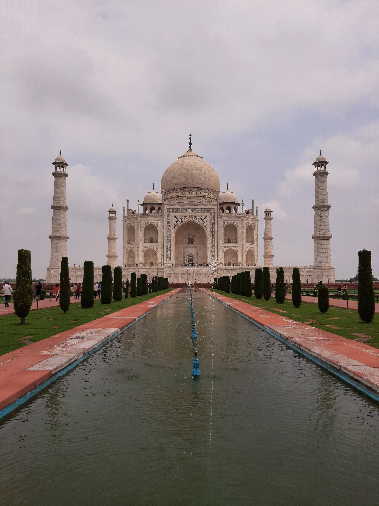
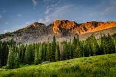
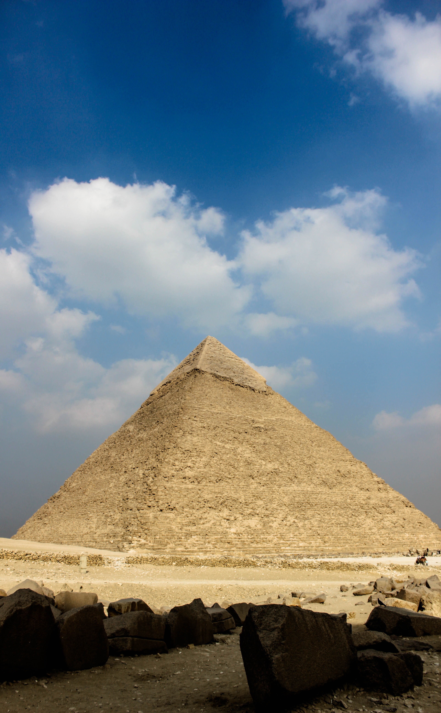
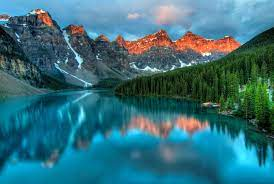

7 Wonders
1. TajMahal

The Taj Mahal ('Crown of the Palace')[4][5][6] is an Islamic ivory-white marble mausoleum on the right bank
of the river Yamuna in Agra, Uttar Pradesh, India. It was commissioned in 1631 by the fifth Mughal emperor,
Shah Jahan (r. 1628–1658) to house the tomb of his favourite wife, Mumtaz Mahal; it also houses the tomb of
Shah Jahan himself. The tomb is the centrepiece of a 17-hectare (42-acre) complex, which includes a mosque
and a guest house, and is set in formal gardens bounded on three sides by a crenellated wall.
Construction of the mausoleum was essentially completed in 1643, but work continued on other phases of the
project for another 10 years. The Taj Mahal complex is believed to have been completed in its entirety in
1653 at a cost estimated at the time to be around ₹32 million, which in 2020 would be approximately ₹70
billion (about US $1 billion). The construction project employed some 20,000 artisans under the guidance of
a board of architects led by Ustad Ahmad Lahauri, the emperor’s court architect. Various types of symbolism
have been employed in the Taj to reflect natural beauty and divinity.
The Taj Mahal was designated as a UNESCO World Heritage Site in 1983 for being "the jewel of Muslim art in
India and one of the universally admired masterpieces of the world's heritage". It is regarded by many as
the best example of Mughal architecture and a symbol of India's rich history. The Taj Mahal attracts more
than 6 million visitors a year[3] and in 2007, it was declared a winner of the New 7 Wonders of the World
(2000–2007) initiative.
2. Lion

The lion is a well-muscled cat with a long body, large head, and short legs. Size and appearance vary
considerably between the sexes. The male’s outstanding characteristic is his mane, which varies between
different individuals and populations. It may be entirely lacking; it may fringe the face; or it may be full
and shaggy, covering the back of the head, neck, and shoulders and continuing onto the throat and chest to
join a fringe along the belly. In some lions the mane and fringe are very dark, almost black, giving the cat
a majestic appearance. Manes make males look larger and may serve to intimidate rivals or impress
prospective mates. A full-grown male is about 1.8–2.1 metres (6–7 feet) long, excluding the 1-metre tail; he
stands about 1.2 metres high at the shoulder and weighs 170–230 kg (370–500 pounds). The female, or lioness,
is smaller, with a body length of 1.5 metres, a shoulder height of 0.9–1.1 metres, and a weight of 120–180
kg. The lion’s coat is short and varies in colour from buff yellow, orange-brown, or silvery gray to dark
brown, with a tuft on the tail tip that is usually darker than the rest of the coat.
3. Mountain

A mountain is an elevated portion of the Earth's crust, generally with steep sides that show significant
exposed bedrock.
Although definitions vary, a mountain may differ from a plateau in having a limited summit area, and is
usually higher than
a hill, typically rising at least 300 metres (1,000 feet) above the surrounding land. A few mountains are
isolated summits,
but most occur in mountain ranges.[1]
Mountains are formed through tectonic forces, erosion, or volcanism,[1] which act on time scales of up to
tens of millions of
years.[2] Once mountain building ceases, mountains are slowly leveled through the action of weathering,
through slumping and other
forms of mass wasting, as well as through erosion by rivers and glaciers.[3]
High elevations on mountains produce colder climates than at sea level at similar latitude. These colder
climates strongly affect the
ecosystems of mountains: different elevations have different plants and animals. Because of the less
hospitable terrain and climate,
mountains tend to be used less for agriculture and more for resource extraction, such as mining and logging,
along with recreation, such as mountain climbing and skiing.
The highest mountain on Earth is Mount Everest in the Himalayas of Asia, whose summit is 8,850 m (29,035 ft)
above mean sea level. The
highest known mountain on any planet in the Solar System is Olympus Mons on Mars at 21,171 m (69,459 ft).
4. Pyramid

A pyramid (from Greek: πυραμίς pyramís)[1][2] is a structure whose outer surfaces are triangular and converge
to a single step at the top, making the shape roughly a pyramid in the geometric sense. The base of a
pyramid can be trilateral, quadrilateral, or of any polygon shape. As such, a pyramid has at least three
outer triangular surfaces (at least four faces including the base). The square pyramid, with a square base
and four triangular outer surfaces, is a common version.
A pyramid's design, with the majority of the weight closer to the ground[3] and with the pyramidion at the
apex, means that less material higher up on the pyramid will be pushing down from above. This distribution
of weight allowed early civilizations to create stable monumental structures.
Civilizations in many parts of the world have built pyramids. The largest pyramid by volume is the
Mesoamerican Great Pyramid of Cholula, in the Mexican state of Puebla. For thousands of years, the largest
structures on Earth were pyramids—first the Red Pyramid in the Dashur Necropolis and then the Great Pyramid
of Khufu, both in Egypt—the latter is the only one of the Seven Wonders of the Ancient World still
remaining.
5.River

River, (ultimately from Latin ripa, “bank”), any natural stream of water that flows in a channel with defined banks . Modern usage includes rivers that are multichanneled, intermittent, or ephemeral in flow and channels that are practically bankless. The concept of channeled surface flow, however, remains central to the definition. The word stream (derived ultimately from the Indo-European root srou-) emphasizes the fact of flow; as a noun, it is synonymous with river and is often preferred in technical writing. Small natural watercourses are sometimes called rivulets, but a variety of names—including branch, brook, burn, and creek—are more common, occurring regionally to nationally in place-names. Arroyo and (dry) wash connote ephemeral streams or their resultant channels. Tiny streams or channels are referred to as rills or runnels.
Rio Grande
Rio Grande
Rivers are nourished by precipitation, by direct overland runoff, through springs and seepages, or from meltwater at the edges of snowfields and glaciers. The contribution of direct precipitation on the water surface is usually minute, except where much of a catchment area is occupied by lakes. River water losses result from seepage and percolation into shallow or deep aquifers (permeable rock layers that readily transmit water) and particularly from evaporation. The difference between the water input and loss sustains surface discharge or streamflow. The amount of water in river systems at any time is but a tiny fraction of the Earth’s total water; 97 percent of all water is contained in the oceans and about three-quarters of fresh water is stored as land ice; nearly all the remainder occurs as groundwater. Lakes hold less than 0.5 percent of all fresh water, soil moisture accounts for about 0.05 percent, and water in river channels for roughly half as much, 0.025 percent, which represents only about one four-thousandth of the Earth’s total fresh water.
Water is constantly cycled through the systems of land ice, soil, lakes, groundwater (in part), and river channels, however. The discharge of rivers to the oceans delivers to these systems the equivalent of the water vapour that is blown overland and then consequently precipitated as rain or snow—i.e., some 7 percent of mean annual precipitation on the globe and 30 percent of precipitation on land areas.